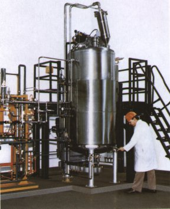
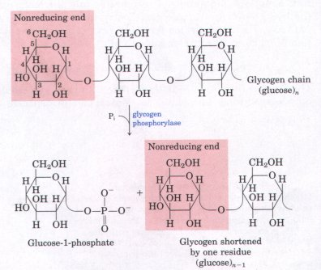
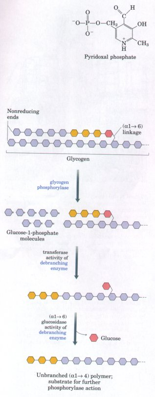
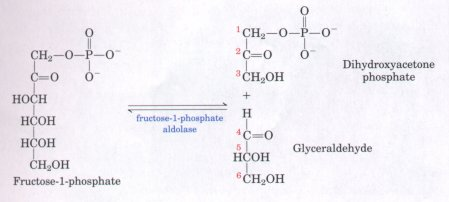
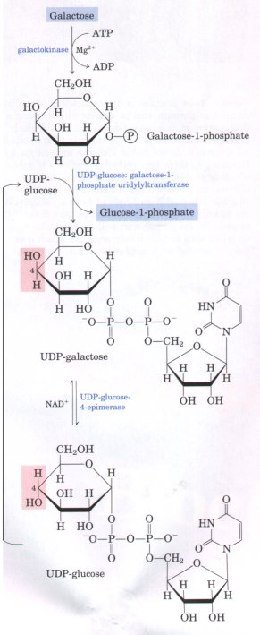
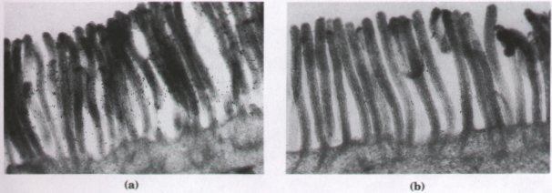
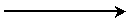
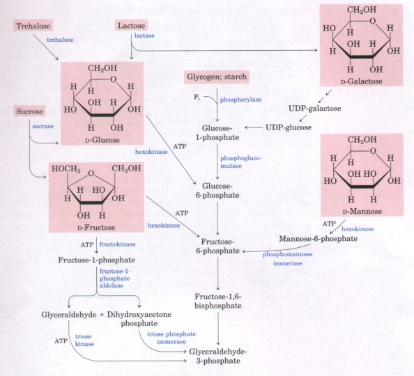

| In addition to glucose, many other
carbohydrates ultimately enter the glycolytic pathway to
undergo energy-yielding degradation. The most significant
are the storage polysaccharides glycogen and starch, the
disaccharides maltose, lactose, trehalose, and sucrose,
and the monosaccharides fructose, mannose, and galactose.
We shall now consider the pathways by which these
carbohydrates can enter glycolysis. Glycogen and Starch Are Degraded by Phosphorolysis The glucose units of the outer branches of glycogen and starch gain entrance into the glycolytic pathway through the sequential action of two enzymes: glycogen phosphorylase (or the similar starch phosphorylase in plants) and phosphoglucomutase. Glycogen phosphorylase catalyzes the reaction in which an (α1→4) glycosidic linkage joining two glucose residues in glycogen undergoes attack by inorganic phosphate, removing the terminal glucose residue as α-D--glucose-1-phosphate (Fig. 14-11). This phosphorolysis reaction that occurs during intracellular mobilization of glycogen stores is different from the hydrolysis of glycosidic bonds by amylase during intestinal degradation of glycogen or starch; in phosphorolysis, some of the energy of the glycosidic bond is preserved in the formation of the phosphate ester, glucose-1-phosphate. |
 Figure 14-10 An industrial-scale fermentation. Microorganisms are cultured in a sterilizable vessel containing thousands of liters of growth medium made up of an inexpensive carbon-and-energy source under carefully controlled conditions, including low oxygen concentration and constant temperature. After centrifugal separation of the cells from the growth medium, the valuable products of the fermentation are recovered from the cells or the supernatant fluid. |
 |
Figure 14-11 Removal of a terminal glucose residue from the nonreducing end of a glycogen chain by the action of glycogen phosphorylase. This process is repetitive, removing successive glucose residues until it reaches the fourth glucose unit from a branch point (see Fig. 14-12). Amylopectin is degraded in a similar fashion by starch phosphorylase. |
| Pyridoxal phosphate is an essential
cofactor in the glycogen phosphorylase reaction; its
phosphate group acts as a general acid catalyst,
promoting attack by Pi on the glycosidic bond. A quite
different role of pyridoxal phosphate as a cofactor in
amino acid metabolism will be described in detail in
Chapter 17. Glycogen phosphorylase (or starch phosphorylase) acts repetitively on the nonreducing ends of glycogen (or amylopectin) branches until it reaches a point four glucose residues away from an (α1→6) branch point (see Fig. 11-15). Here the action of glycogen or starch phosphorylase stops. Further degradation can occur only after the action of a "debranching enzyme," oligo (α1→6) to (α1→4) glucantransferase, which catalyzes two successive reactions that remove branches (Fig. 14-12). Glucose-1-phosphate, the end product of the glycogen and starch phosphorylase reactions, is converted into glucose-6-phosphate by phosphoglucomutase, which catalyzes the reversible reaction Glucose-1-phosphate Phosphoglucomutase requires as a cofactor glucose-1,6-bisphosphate; its role is analogous to that of 2,3-bisphosphoglycerate in the reaction catalyzed by phosphoglycerate mutase (Fig. 14-6). Phosphoglucomutase, like phosphoglycerate mutase, cycles between a phosphorylated and nonphosphorylated form. In phosphoglucomutase, however, it is the hydroxyl group of a Ser residue in the active site that is transiently phosphorylated in the catalytic cycle. |
 |
Figure 14-12 Glycogen breakdown near (α1→6) branch
points. Following the sequential removal of terminal
glucose residues by glycogen phosphorylase (Fig. 14-11),
glucose residues near a branch are removed in a two-step
process that requires the action of a bifunctional
"debranching enzyme." First, the transferase
activity of this enzyme shifts a block of three glucose
residues from the branch to
a nearby nonreducing end, to which they are reattached in
(α1→4) linkage. Then the single glucose residue
remaining at the branch point, in (α1→6) linkage, is
released as free glucose by the enzyme's (α1→6)
glucosidase activity. The glucose residues are shown in
shorthand form, which omits the -H, -OH, and -CH2OH
groups from the pyranose rings.
In most organisms, hexoses other than glucose can undergo glycolysis after conversion to a phosphorylated derivative. D-Fructose, present in free form in many fruits and formed by hydrolysis of sucrose in the small intestine, can be phosphorylated by hexokinase, which acts on a number of different hexoses:
| Fructose + ATP | Mg2+  |
fructose-6-phosphate + ADP |
In the muscles and kidney of vertebrates this is a major pathway. In the liver, however, fructose gains entry into glycolysis by a different pathway. The liver enzyme fructokinase catalyzes the phosphorylation of fructose, not at C-6, but at C-l:
| Fructose + ATP | Mg2+ |
fructose-1-phosphate + ADP |
The fructose-1-phosphate is then cleaved to form glyceraldehyde and dihydroxyacetone phosphate by fructose-1-phosphate aldolase.

Dihydroxyacetone phosphate is converted into glyceraldehyde-3phosphate by the glycolytic enzyme triose phosphate isomerase. Glyceraldehyde is phosphorylated by ATP and triose kinase to glyceraldehyde-3-phosphate:| Glyceraldehyde + ATP | Mg2+ |
glyceraldehyde-3-phosphate + ADP |
|
Thus both products of fructose hydrolysis enter the glycolytic pathway as glyceraldehyde- 3-phosphate. D-Galactose, derived by hydrolysis of the disaccharide lactose (milk sugar), is first phosphorylated at C-1 at the expense of ATP by the enzyme galactokinase: Galactose + ATP The galactose-1-phosphate is then converted into its epimer at C-4, glucose-1-phosphate, by a set of reactions in which uridine diphosphate (UDP) functions as a coenzymelike carrier of hexose groups (Fig. 14-13). There are several human genetic diseases in which galactose metabolism is affected. In the most common form of galactosemia, the enzyme UDP-glucose : galactose-1-phosphate uridylyltransferase (Fig. 14-13) is genetically defective, preventing the overall conversion of galactose into glucose. Other forms of galactosemia result when either galactokinase or UDP-glucose-4-epimerase is genetically defective. D-Mannose, which arises from the digestion of various polysaccharides and glycoproteins present in foods, can be phosphorylated at C-6 by hexokinase:
Mannose-6-phosphate is then isomerized by the action of phosphomannose isomerase, to yield fructose-6-phosphate, an intermediate of glycolysis. |
 Figure 14-13 Pathway of the conversion of ngalactose into n-glucose. The conversion proceeds through a sugar-nucleotide derivative, UDP-galactose, which is formed when galactose-1-phosphate displaces glucose-1-phosphate from UDP-glucose. UDP-galactose is then converted by UDP-glucose 4-epimerase to UDP-glucose. The UDP-glucose is recycled through another round of the same reaction. The net effect of this cycle is the conversion of galactose-1-phosphate to glucose-1-phosphate; there is no net production or consumption of UDP-galactose or UDP-glucose. |

Figure 14-14 Lactase, a disaccharidase of the intestinal epithelium, can be detected by treating a thin section of intestinal tissue with an antibody that specifically binds to the enzyme. The antibodies are made visible in the electron microscope by attaching to them tiny colloidal particles of gold, which appear as black (electron-dense) dots in electron micrographs. (a) Tissue from an adult who has retained high levels of lactase. Microvilli are heavily labeled with antibodies that detect lactase. (b) Intestinal microvilli in tissue from an adult with lactose intolerance are much less heavily labeled with antibodies against lactase.
Disaccharides cannot directly enter the glycolytic pathway; indeed they cannot enter cells without first being hydrolyzed to monosaccharides extracellularly. In vertebrates, ingested disaccharides must first be hydrolyzed by enzymes attached to the outer surface of the epithelial cells lining the small intestine (Fig. 14-14), to yield their monosaccharide units:
| Maltose + H2O | maltase  |
2 D-glucose |
| Lactose + H2O | lactase |
D-galactose + D-glucose |
| Sucrose + H2O | sucrase |
D-fructose + D-glucose |
| Trehalose + H2O | trehalase |
2 D-glucose |
The monosaccharides so formed are transported into the cells lining the intestine, from which they pass into the blood and are carried to the liver. There they are phosphorylated and funneled into the glycolytic sequence as described above.
Lactose intolerance is a condition, common among adults of most human races except Northern Europeans and some Africans, in which the ingestion of milk or other foods containing lactose leads to abdominal cramps and diarrhea. Lactose intolerance is due to the disappearance after childhood of most or all of the lactase activity of the intestinal cells (Fig. 14-14b), so that lactose cannot be completely digested and absorbed. Lactose not absorbed in the small intestine is converted by bacteria in the large intestine into toxic products that cause the symptoms of the condition. In those parts of the world where lactose intolerance is prevalent, milk is simply not used as a food by adults. Milk products digested with lactase are commercially available in some countries as an alternative to excluding milk products from the diet. In certain diseases of humans, several or all of the intestinal disaccharidases are missing because of genetic defects or dietary factors, resulting in digestive disturbances triggered by disaccharides in the diet (Fig. 14-14b). Altering the diet to reduce disaccharide content sometimes alleviates the symptoms of these defects.
Figure 14-15 summarizes the feeder pathways that funnel hexoses, disaccharides, and polysaccharides into the central glycolytic pathway.

Figure 14-15 Entry of glycogen, starch, disaccharides, and hexoses into the preparatory stage of glycolysis.

 glucose-6-phosphate
glucose-6-phosphate